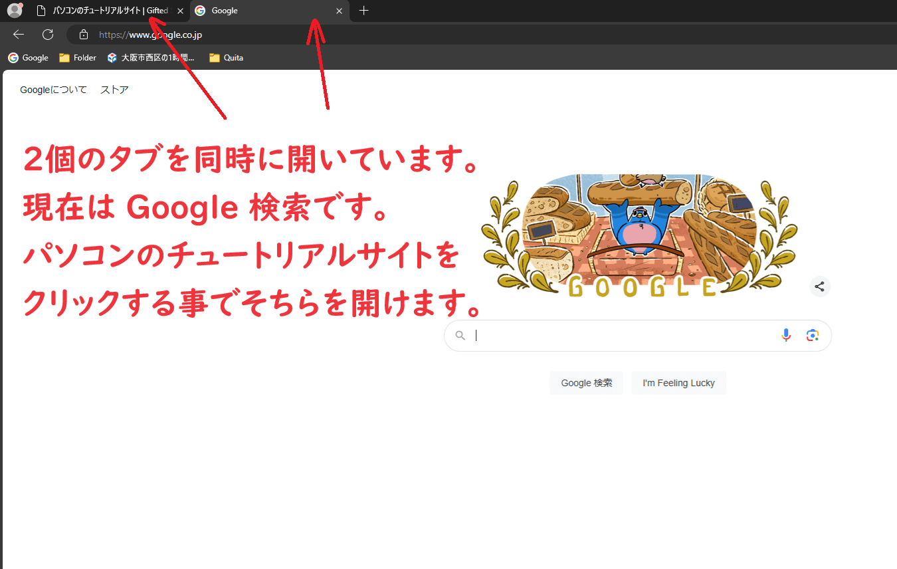

ブラウザのタブの概念を学ぼう
これからブラウザの検索について習得していきます。まずはタブの概念について知る必要があるため説明していきます。ブラウザには「タブ」という概念があります。ブラウザで同時に複数のサイトを開くためにこの概念があります。例えば下記の画像では「パソコンのチュートリアルサイト」と「Google 検索」を同時に開いています。「Google 検索」を開いている時に「パソコンのチュートリアルサイト」を開きたい場合はパソコンのチュートリアルサイト」の文字を押すことで開くことができます。これから 2 個のタブを開いて作業していきます。「パソコンのチュートリアルサイト」ともう一つのタブを切り替えつつ作業していきましょう。

<< 前へ 次へ >>